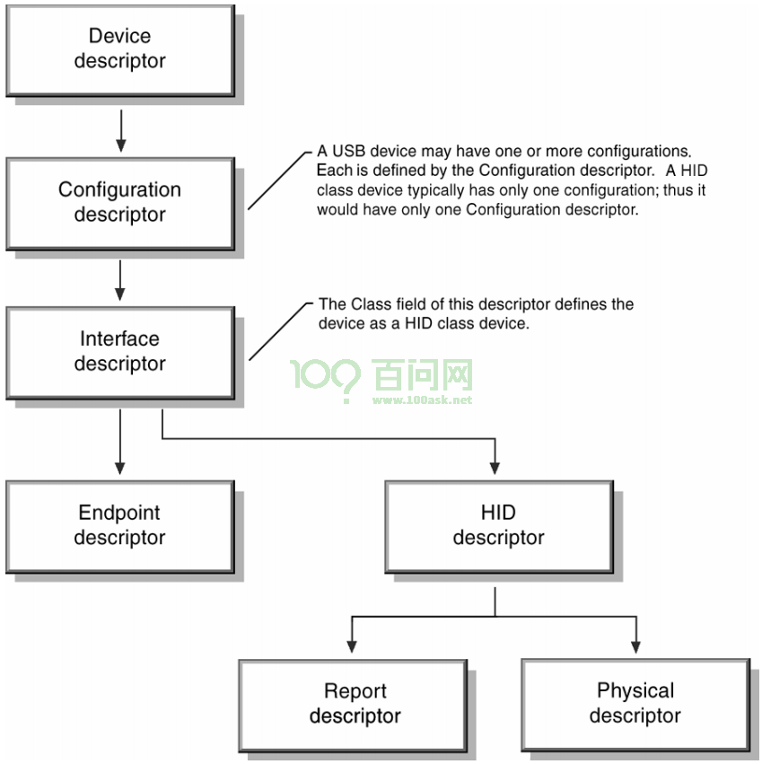
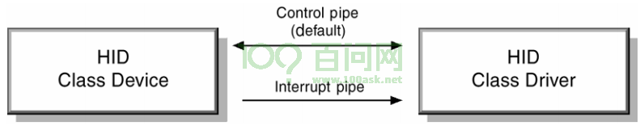
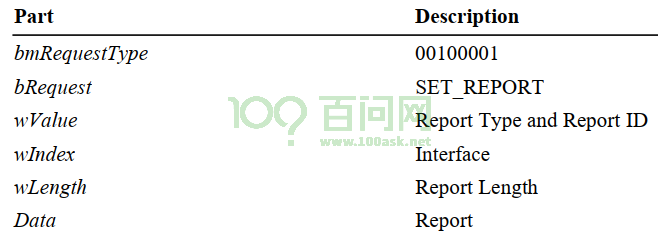
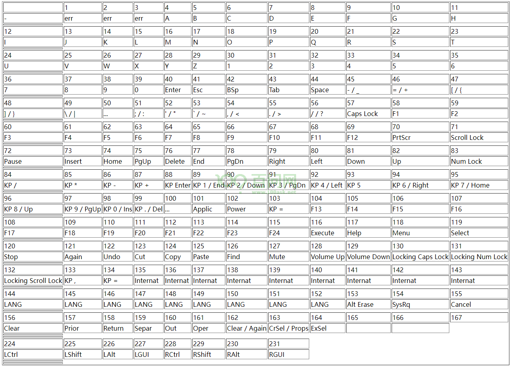
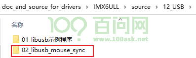
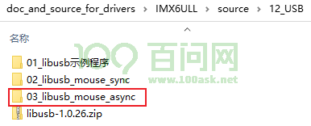

07_使用libusb读取鼠标数据#
参考资料：
libusb API接口：https://libusb.sourceforge.io/api-1.0/
libusb 示例：https://github.com/libusb/libusb/tree/master/examples
HID规范：https://www.usb.org/sites/default/files/hid1_11.pdf (文件已经下载放在GIT仓库)
文档：USB Human Interface Devices, https://wiki.osdev.org/USB_Human_Interface_Devices
1. HID协议#
HID: Human Interface Devices, 人类用来跟计算机交互的设备。就是鼠标、键盘、游戏手柄等设备。 对于USB接口的HID设备，有一套协议。
1.1 描述符#
HID设备有如下描述符：

HID设备的”设备描述符”并无实际意义，没有使用”设备描述符”来表示自己是HID设备。
HID设备只有一个配置，所以只有一个配置描述符
接口描述符
bInterfaceClass为3，表示它是HID设备
bInterfaceSubClass是0或1，1表示它支持”Boot Interface”(表示PC的BIOS能识别、使用它)，0表示必须等操作系统启动后通过驱动程序来使用它。
bInterfaceProtocol：0-None, 1-键盘, 2-鼠标
端点描述符：HID设备有一个控制端点、一个中断端点

对于鼠标，HOST可以通过中断端点读到数据。
1.2 数据格式#
1.2.1 键盘#
通过中断传输可以读到键盘数据，它是8字节的数据，格式如下：
偏移 |
大小 |
描述 |
|---|---|---|
0 |
1字节 |
“Modifier keys status”，就是ctrl、alt、shift等按键的状态 |
1 |
1字节 |
保留 |
2 |
1字节 |
第1个按键的键值 |
3 |
1字节 |
第2个按键的键值 |
4 |
1字节 |
第3个按键的键值 |
5 |
1字节 |
第4个按键的键值 |
6 |
1字节 |
第5个按键的键值 |
7 |
1字节 |
第6个按键的键值 |
第0个字节中每一位都表示一个按键的状态，某位等于1时，表示对应的按键被按下，格式如下：
位 |
长度 |
描述 |
|---|---|---|
0 |
1 |
Left Ctrl |
1 |
1 |
Left Shift |
2 |
1 |
Left Alt |
3 |
1 |
Left GUI(Windows/Super key) |
4 |
1 |
Right Ctrl |
5 |
1 |
Right Shift |
6 |
1 |
Right Alt |
7 |
1 |
Right GUI(Windows/Super key) |
读到的键盘数据里有6个按键值，每个按键值都是8位的数据。如果某个按键值不等于0，就表示某个按键被按下了。 按键值跟按键的对应关系，请看后面的《1.2.4 扫描码》。
示例：按键”A”、”B”、”C”、”X”的按键值分别是4、5、6、0x1B。
按下了”A”，USB键盘上报的数据为：
00 00 04 00 00 00 00 00
松开”A”，USB键盘上报的数据为：
00 00 00 00 00 00 00 00
按下”A”、”B”，USB键盘上报的数据为：
00 00 04 05 00 00 00 00
保持”A”、”B”不松开，继续按下”C”，USB键盘上报的数据为：
00 00 04 05 06 00 00 00
松开”A”，但是保持”B”、”C”不松开，USB键盘上报的数据为：
00 00 05 06 00 00 00 00
USB键盘上报的数据里，哪个按键先被按下，就先记录它的按键值。在上面的例子里，”A”松开后只有”B”、”C”这两个按键，”B”、”C”的按键值挪到了前面。
按下”Left shift”、并且按下”X”，USB键盘上报的数据为：
02 00 1B 00 00 00 00 00
USB键盘只能上报6个按键值，如果有超过6个按键被按下，那么它讲上报”phantom condition”(6个按键值都是1)，但是”Modifier keys status”还是有效的。比如”Right Shift”被按下，另外超过6个的按键也被按下时，USB键盘上报的数据为：
20 00 01 01 01 01 01 01
1.2.2 LED#
我们还可控制键盘的LED，需要发出一个控制传输请求：SetReport ，使用这个请求发送一个字节的数据。
这个字节的数据格式如下，某位为1时，会点亮相应的LED：
位 |
长度 |
描述 |
|---|---|---|
0 |
1 |
Num Lock |
1 |
1 |
Caps Lock |
2 |
1 |
Scroll Lock |
3 |
1 |
Compose |
4 |
1 |
Kana |
5 |
1 |
保留，写为0 |
发出的SetReport，是一个控制传输的”setup packet”，格式如下：

以libusb的函数描述它的参数，如下：
int LIBUSB_CALL libusb_control_transfer(libusb_device_handle *dev_handle,
uint8_t request_type, uint8_t bRequest, uint16_t wValue, uint16_t wIndex,
unsigned char *data, uint16_t wLength, unsigned int timeout);
/* 示例代码 */
unsigned char data = (1<<1); /* 点亮Caps Lock */
uint16_t wValue = (0x02<<8)|0; // 0x02: 发给设备, 0: report ID
uint16_t wIndex = 0; // 一般是0, the interface number of the USB keyboard
libusb_control_transfer(dev_handle, 0x21, 0x09, wValue, wIndex, &data, 1, timeout);
1.2.3 鼠标#
通过中断传输可以读到鼠标数据，它是8字节的数据，格式如下：
偏移 |
大小 |
描述 |
|---|---|---|
0 |
1字节 |
|
1 |
1字节 |
按键状态 |
2 |
2字节 |
X位移 |
4 |
2字节 |
Y位移 |
6 |
1字节或2字节 |
滚轮 |
按键状态里，每一位对应鼠标的一个按键，等1时表示对应按键被点击了，格式如下：
位 |
长度 |
描述 |
|---|---|---|
0 |
1 |
鼠标的左键 |
1 |
1 |
鼠标的右键 |
2 |
1 |
鼠标的中间键 |
3 |
5 |
保留，设备自己定义 |
X位移、Y位移都是8位的有符号数。对于X位移，负数表示鼠标向左移动，正数表示鼠标向右移动，移动的幅度就使用这个8位数据表示。对于Y位移，负数表示鼠标向上移动，正数表示鼠标向下移动，移动的幅度就使用这个8位数据表示。
1.2.4 扫描码#
USB规范里为每个按键定义了16位的按键值，注意：它是16位的，但是USB键盘只使用8位表示按键值。所以有些按键需要通过”Modifier keys status”来确定。比如”Left Ctrl”的按键值是224，这无法通过8位数据来表示，在USB键盘上报的数据里，使用第0字节的bit4来表示。

2. 使用同步接口读取鼠标数据#
源码在GIT仓库如下位置：

2.1 编写源码#
#include <errno.h>
#include <signal.h>
#include <stdio.h>
#include <stdlib.h>
#include <string.h>
#include <libusb-1.0/libusb.h>
int main(int argc, char **argv)
{
int err;
libusb_device *dev, **devs;
int num_devices;
int endpoint;
int interface_num;
int found = 0;
int transferred;
int count = 0;
unsigned char buffer[16];
struct libusb_config_descriptor *config_desc;
struct libusb_device_handle *dev_handle = NULL;
/* libusb_init */
err = libusb_init(NULL);
if (err < 0) {
fprintf(stderr, "failed to initialise libusb %d - %s\n", err, libusb_strerror(err));
exit(1);
}
/* get device list */
if ((num_devices = libusb_get_device_list(NULL, &devs)) < 0) {
fprintf(stderr, "libusb_get_device_list() failed\n");
libusb_exit(NULL);
exit(1);
}
fprintf(stdout, "libusb_get_device_list() ok\n");
/* for each device, get config descriptor */
for (int i = 0; i < num_devices; i++) {
dev = devs[i];
/* parse interface descriptor, find usb mouse */
err = libusb_get_config_descriptor(dev, 0, &config_desc);
if (err) {
fprintf(stderr, "could not get configuration descriptor\n");
continue;
}
fprintf(stdout, "libusb_get_config_descriptor() ok\n");
for (int interface = 0; interface < config_desc->bNumInterfaces; interface++) {
const struct libusb_interface_descriptor *intf_desc = &config_desc->interface[interface].altsetting[0];
interface_num = intf_desc->bInterfaceNumber;
if (intf_desc->bInterfaceClass != 3 || intf_desc->bInterfaceProtocol != 2)
continue;
else
{
/* 找到了USB鼠标 */
fprintf(stdout, "find usb mouse ok\n");
for (int ep = 0; ep < intf_desc->bNumEndpoints; ep++)
{
if ((intf_desc->endpoint[ep].bmAttributes & 3) == LIBUSB_TRANSFER_TYPE_INTERRUPT ||
(intf_desc->endpoint[ep].bEndpointAddress & 0x80) == LIBUSB_ENDPOINT_IN) {
/* 找到了输入的中断端点 */
fprintf(stdout, "find in int endpoint\n");
endpoint = intf_desc->endpoint[ep].bEndpointAddress;
found = 1;
break;
}
}
}
if (found)
break;
}
libusb_free_config_descriptor(config_desc);
if (found)
break;
}
if (!found)
{
/* free device list */
libusb_free_device_list(devs, 1);
libusb_exit(NULL);
exit(1);
}
if (found)
{
/* libusb_open */
err = libusb_open(dev, &dev_handle);
if (err)
{
fprintf(stderr, "failed to open usb mouse\n");
exit(1);
}
fprintf(stdout, "libusb_open ok\n");
}
/* free device list */
libusb_free_device_list(devs, 1);
/* claim interface */
libusb_set_auto_detach_kernel_driver(dev_handle, 1);
err = libusb_claim_interface(dev_handle, interface_num);
if (err)
{
fprintf(stderr, "failed to libusb_claim_interface\n");
exit(1);
}
fprintf(stdout, "libusb_claim_interface ok\n");
/* libusb_interrupt_transfer */
while (1)
{
err = libusb_interrupt_transfer(dev_handle, endpoint, buffer, 16, &transferred, 5000);
if (!err) {
/* parser data */
printf("%04d datas: ", count++);
for (int i = 0; i < transferred; i++)
{
printf("%02x ", buffer[i]);
}
printf("\n");
} else if (err == LIBUSB_ERROR_TIMEOUT){
fprintf(stderr, "libusb_interrupt_transfer timout\n");
} else {
fprintf(stderr, "libusb_interrupt_transfer err : %d\n", err);
//exit(1);
}
}
/* libusb_close */
libusb_release_interface(dev_handle, interface_num);
libusb_close(dev_handle);
libusb_exit(NULL);
}
2.2 上机实验#
2.2.1 在Ubuntu上实验#
// 1. 安装开发包
$ sudo apt install libusb-1.0-0-dev
// 2. 修改源码，包含libusb.h 头文件时用如下代码
#include <libusb-1.0/libusb.h>
// 3. 编译程序指定库
gcc -o readmouse readmouse.c -lusb-1.0
2.2.2 在IMX6ULL开发板上实验#
交叉编译libusb
sudo apt-get install libtool unzip libusb-1.0.26.zip cd libusb-1.0.26 ./autogen.sh ./configure --host=arm-buildroot-linux-gnueabihf --prefix=$PWD/tmp make make install ls tmp/ include lib
安装库、头文件到工具链的目录里
libusb-1.0.26/tmp/lib$ cp * -rfd /home/book/100ask_imx6ull-sdk/ToolChain/arm-buildroot-linux-gnueabihf_sdk-buildroot/arm-buildroot-linux-gnueabihf/sysroot/usr/lib/ libusb-1.0.26/tmp/include$ cp libusb-1.0 -rf /home/book/100ask_imx6ull-sdk/ToolChain/arm-buildroot-linux-gnueabihf_sdk-buildroot/arm-buildroot-linux-gnueabihf/sysroot/usr/include/
交叉编译app
arm-buildroot-linux-gnueabihf-gcc -o readmouse.c -lusb-1.0
在开发板上插入USB鼠标，执行命令
./readmouse
2.2.3 在STM32MP157开发板上实验#
STM32MP157的工具链里已经含有libusb，所以无需交叉编译、安装libusb
交叉编译app
arm-buildroot-linux-gnueabihf-gcc -o readmouse readmouse.c -lusb-1.0
在开发板上插入USB鼠标，执行命令
./readmouse
3. 使用异步接口读取鼠标数据#
源码在GIT仓库如下位置：

3.1 编写源码#
#include <errno.h>
#include <signal.h>
#include <stdio.h>
#include <stdlib.h>
#include <string.h>
#include <libusb-1.0/libusb.h>
struct usb_mouse {
struct libusb_device_handle *handle;
int interface;
int endpoint;
unsigned char buf[16];
int transferred;
struct libusb_transfer *transfer;
struct usb_mouse *next;
};
static struct usb_mouse *usb_mouse_list;
void free_usb_mouses(struct usb_mouse *usb_mouse_list)
{
struct usb_mouse *pnext;
while (usb_mouse_list)
{
pnext = usb_mouse_list->next;
free(usb_mouse_list);
usb_mouse_list = pnext;
}
}
/* */
int get_usb_mouses(libusb_device **devs, int num_devices, struct usb_mouse **usb_mouse_list)
{
int err;
libusb_device *dev;
int endpoint;
int interface_num;
struct libusb_config_descriptor *config_desc;
struct libusb_device_handle *dev_handle = NULL;
struct usb_mouse *pmouse;
struct usb_mouse *list = NULL;
int mouse_cnt = 0;
/* for each device, get config descriptor */
for (int i = 0; i < num_devices; i++) {
dev = devs[i];
/* parse interface descriptor, find usb mouse */
err = libusb_get_config_descriptor(dev, 0, &config_desc);
if (err) {
fprintf(stderr, "could not get configuration descriptor\n");
continue;
}
fprintf(stdout, "libusb_get_config_descriptor() ok\n");
for (int interface = 0; interface < config_desc->bNumInterfaces; interface++) {
const struct libusb_interface_descriptor *intf_desc = &config_desc->interface[interface].altsetting[0];
interface_num = intf_desc->bInterfaceNumber;
if (intf_desc->bInterfaceClass != 3 || intf_desc->bInterfaceProtocol != 2)
continue;
else
{
/* 找到了USB鼠标 */
fprintf(stdout, "find usb mouse ok\n");
for (int ep = 0; ep < intf_desc->bNumEndpoints; ep++)
{
if ((intf_desc->endpoint[ep].bmAttributes & 3) == LIBUSB_TRANSFER_TYPE_INTERRUPT ||
(intf_desc->endpoint[ep].bEndpointAddress & 0x80) == LIBUSB_ENDPOINT_IN) {
/* 找到了输入的中断端点 */
fprintf(stdout, "find in int endpoint\n");
endpoint = intf_desc->endpoint[ep].bEndpointAddress;
/* libusb_open */
err = libusb_open(dev, &dev_handle);
if (err)
{
fprintf(stderr, "failed to open usb mouse\n");
return -1;
}
fprintf(stdout, "libusb_open ok\n");
/* 记录下来: 放入链表 */
pmouse = malloc(sizeof(struct usb_mouse));
if (!pmouse)
{
fprintf(stderr, "can not malloc\n");
return -1;
}
pmouse->endpoint = endpoint;
pmouse->interface = interface_num;
pmouse->handle = dev_handle;
pmouse->next = NULL;
if (!list)
list = pmouse;
else
{
pmouse->next = list;
list = pmouse;
}
mouse_cnt++;
break;
}
}
}
}
libusb_free_config_descriptor(config_desc);
}
*usb_mouse_list = list;
return mouse_cnt;
}
static void mouse_irq(struct libusb_transfer *transfer)
{
static int count = 0;
if (transfer->status == LIBUSB_TRANSFER_COMPLETED)
{
/* parser data */
printf("%04d datas: ", count++);
for (int i = 0; i < transfer->actual_length; i++)
{
printf("%02x ", transfer->buffer[i]);
}
printf("\n");
}
if (libusb_submit_transfer(transfer) < 0)
{
fprintf(stderr, "libusb_submit_transfer err\n");
}
}
int main(int argc, char **argv)
{
int err;
libusb_device **devs;
int num_devices, num_mouse;
struct usb_mouse *pmouse;
/* libusb_init */
err = libusb_init(NULL);
if (err < 0) {
fprintf(stderr, "failed to initialise libusb %d - %s\n", err, libusb_strerror(err));
exit(1);
}
/* get device list */
if ((num_devices = libusb_get_device_list(NULL, &devs)) < 0) {
fprintf(stderr, "libusb_get_device_list() failed\n");
libusb_exit(NULL);
exit(1);
}
fprintf(stdout, "libusb_get_device_list() ok\n");
/* get usb mouse */
num_mouse = get_usb_mouses(devs, num_devices, &usb_mouse_list);
if (num_mouse <= 0)
{
/* free device list */
libusb_free_device_list(devs, 1);
libusb_exit(NULL);
exit(1);
}
fprintf(stdout, "get %d mouses\n", num_mouse);
/* free device list */
libusb_free_device_list(devs, 1);
/* claim interface */
pmouse = usb_mouse_list;
while (pmouse)
{
libusb_set_auto_detach_kernel_driver(pmouse->handle, 1);
err = libusb_claim_interface(pmouse->handle, pmouse->interface);
if (err)
{
fprintf(stderr, "failed to libusb_claim_interface\n");
exit(1);
}
pmouse = pmouse->next;
}
fprintf(stdout, "libusb_claim_interface ok\n");
/* for each mouse, alloc transfer, fill transfer, submit transfer */
pmouse = usb_mouse_list;
while (pmouse)
{
/* alloc transfer */
pmouse->transfer = libusb_alloc_transfer(0);
/* fill transfer */
libusb_fill_interrupt_transfer(pmouse->transfer, pmouse->handle, pmouse->endpoint, pmouse->buf,
sizeof(pmouse->buf), mouse_irq, pmouse, 0);
/* submit transfer */
libusb_submit_transfer(pmouse->transfer);
pmouse = pmouse->next;
}
/* handle events */
while (1) {
struct timeval tv = { 5, 0 };
int r;
r = libusb_handle_events_timeout(NULL, &tv);
if (r < 0) {
fprintf(stderr, "libusb_handle_events_timeout err\n");
break;
}
}
/* libusb_close */
pmouse = usb_mouse_list;
while (pmouse)
{
libusb_release_interface(pmouse->handle, pmouse->interface);
libusb_close(pmouse->handle);
pmouse = pmouse->next;
}
free_usb_mouses(usb_mouse_list);
libusb_exit(NULL);
}